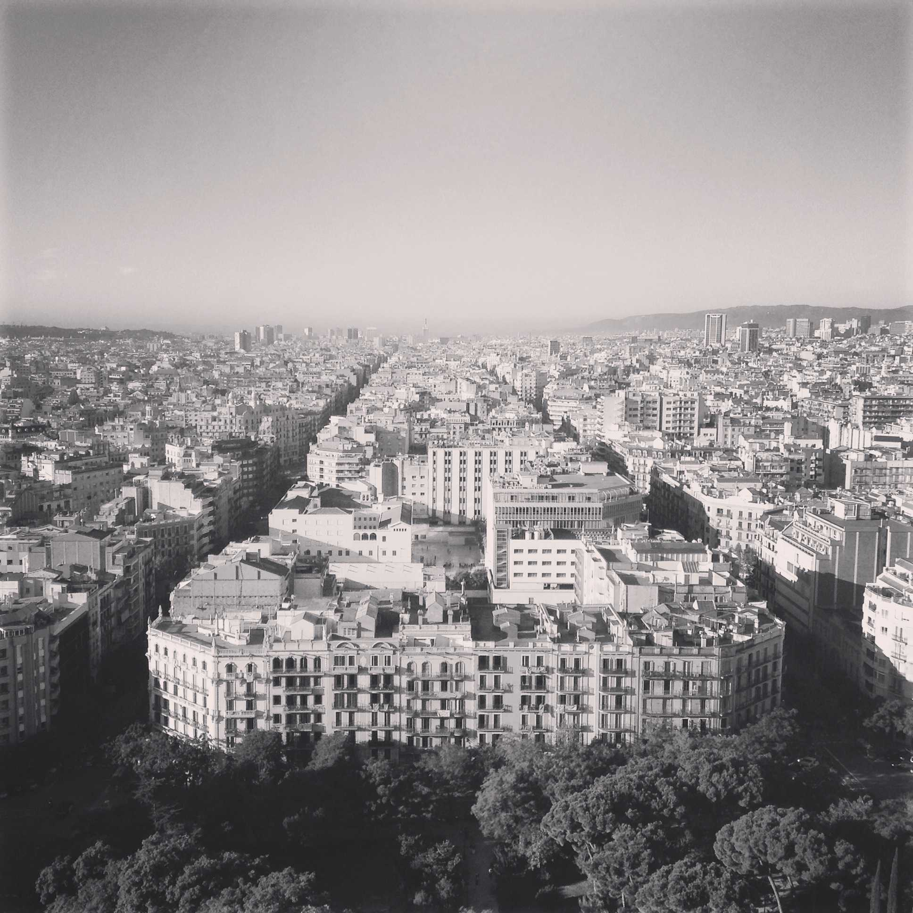
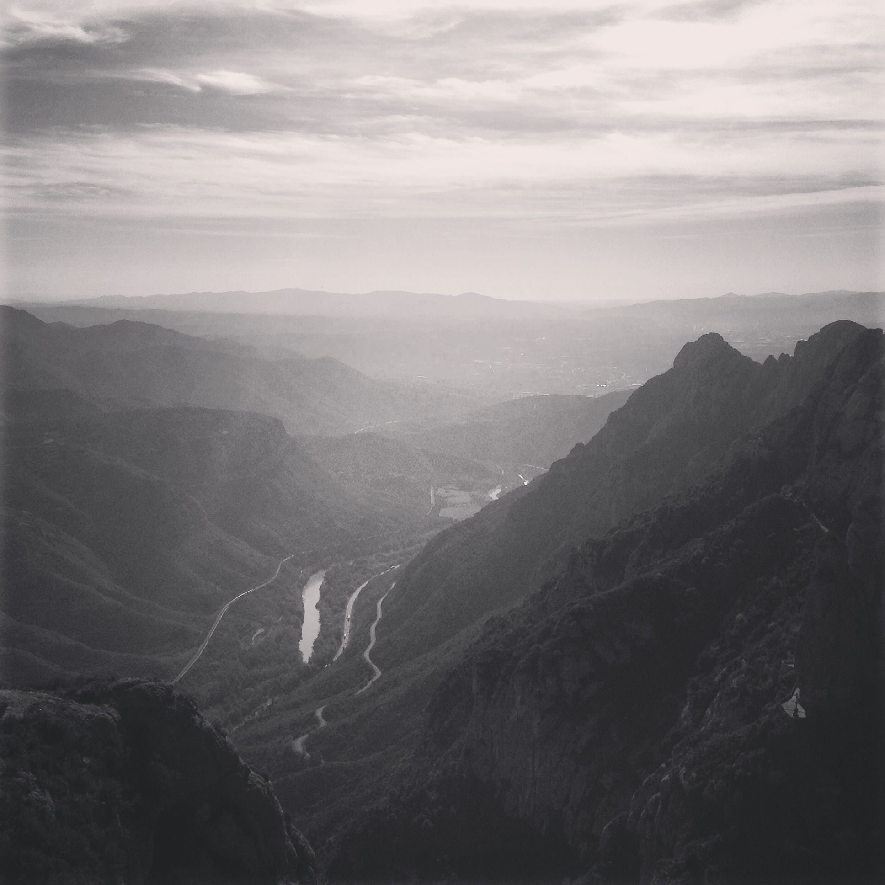
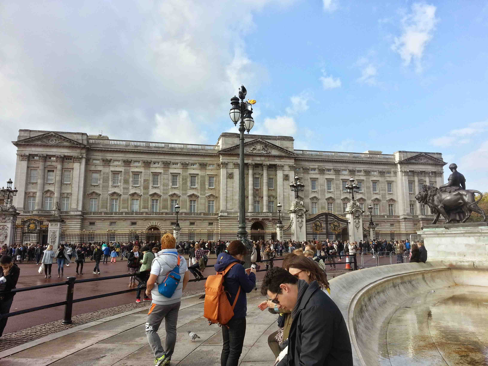
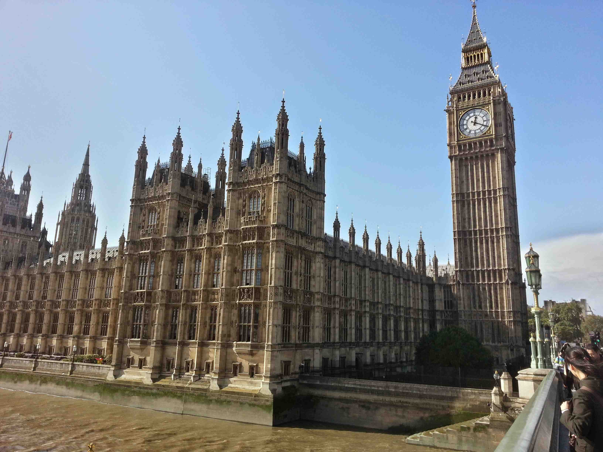
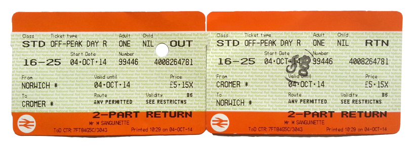
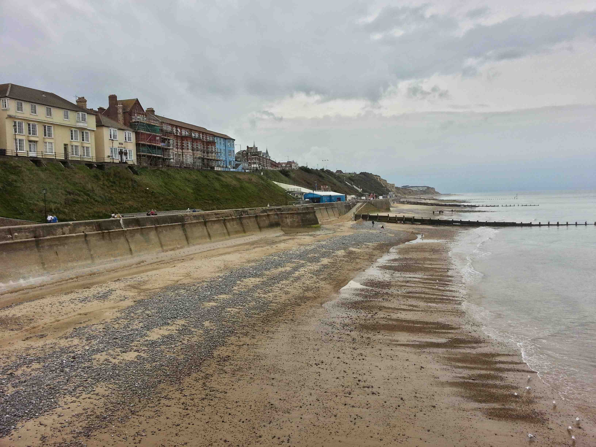
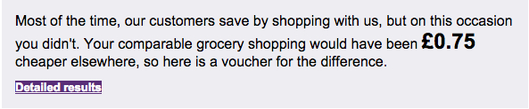

2014 October
2015
Time Switch
It has started getting dark around 4:00-4:30pm. On good, clear, days the sun comes up around 6:30am and on other, cloudy, days it just fades from gray to dark night.
So Much Writing
This past week, reading week, has been filled with two big papers, a 2,000 and a 3,500-word paper. On top of that I have had three presentations to work on, all of which are due this week. Also, I have my last two plant biology practicals this week which consequently leads to another 2,500-word paper. Needless to say, no travels for the next week or two.
London Underground
If you plan on jumping from place to place in London definitely plan on getting a one-day travel ticket. You can go just about anywhere if you purchase a zone 1-9 ticket. This always helps when you are unfamiliar with stops and stations because you will get lost so why not plan ahead and save yourself some money. You can purchase one of these tickets at any Underground station with cash or card.
London, England - Trip 2

On my second trip to London, I took the train from Norwich to London Liverpool Street Station. It cost £30 round trip which was actually cheaper than taking the bus and so much more comfortable. When I go to London I headed to The Tower of London. When inside I took the wall walk which covered a good portion of the grounds. I also stood in the famous spot where the fire started in the castle. Among other things, I saw the Crown Jewels, torture chamber, and the ravens. To be honest, I was not really impressed with Crown Jewels. There is usually a large line and it takes a really long time to see a few crowns and some plates. On the other hand, the price of the Tower of London ticket is definitely worth it as everything but the Crown Jewels was pretty cool.
Next I headed to the river bank and across the Tower bridge. It was so crowded, much like the bridge near Parliament! The sidewalks were somewhat narrow and on top of that you have awkward people stopping in the middle taking selfies with GoPros and camera phones on sticks. Nonetheless, I made it across and managed to capture a couple pictures while not awkwardly blocking people.
After crossing the tower bridge, I was in Southwark. I spent some time exploring the wharf and markets. If you are looking for a posh or fancy place to eat definitely go to the restaurants on the west side.
Continuing along the bank I reached the Tate Modern (free), one of the world's best contemporary art galleries next the MoMA and Guggenheim. The building and its location were interesting, but I have to say their bookshop has a terrible selection, at least on Design. Also, when compared to MoMA, you can actually bring water and backpacks into the gallery space. At MoMA, you are not allowed to bring water or bags in the gallery space. On my way to the Tate, I passed Shakespeare's Globe and London Bridge.
The Millennium bridge was just outside the Tate so I took that across the river toward St. Paul's Cathedral and the Underground station. As it was lunchtime I stopped at the nearest Sainsbury and grabbed some quick food.
The British Museum (free) is by far the best museum I've been to in England. If you have the chance, go! There is so much to see and many of the objects are incredibly old and big, although there were certainly smaller objects to see as well. The museum space and architecture is great but there weren't many seats available throughout the gallery so if you plan on staying for awhile, which you will, plan some stopping points. You will need it especially if this is one thing among many to want to visit during your trip.
Barcelona Videos
I took my GoPro to Spain with me so I have finally uploaded a couple videos of the trip on YouTube. You can see the other videos at www.youtube.com/user/MrTsanguinette/videos
No Class
No plant biology class due to a chemical fire in the chemistry lab. To read what happened please visit this BBC News article.
First Lab
Today I had my first Plant Biology lab. It was a bit uncomfortable since I had no idea what I was doing, well at least compared to the others. I also got lost going to the lab and showed up about 5 minutes late. Everyone had white lab coats and partners picked out. I struggled to find someone who wanted to work with me and I had to use the university's supplied colored lab coat because I obviously didn’t have my own. During the lab, we had to draw diagrams and dissect different plants. While I was drawing and shading a plant the lab tech came over and said that a simple line drawing was preferred. I guess that is what you get when you ask an art student to take science classes.
Barcelona, Spain


Ryanair is a cheap airline that basically flys to all the major cities in Europe. For me, the closest airport that Ryanair operates international flights out of is London Stansted. If you take the National Express coach directly from campus you can get there in about 3 hours and 15 minutes depending on traffic. For round trip coach tickets, it cost about £31.
Barcelona is notorious for pick pocketing. Definitely educate yourself on ways to minimize theft. In doing so, it was recommended that I plan things I wanted to do before leaving and then purchase those tickets online if possible. Most places offer online tickets, some even give discounts for doing so. For others, it may not be possible. If you pull money out of your pocket in a highly tourist-filled area you are an easy target for pick pocketing. They know where your money is now and will most likely try to take it. I was also advised to leave my passport locked in my room during my stay and carry a copy of it with me. If your copy passport gets taken from your persons, well, then you are still able to leave the country as scheduled with your original passport.
I expected London Stansted to be a smaller airport than it actually was. The coach stop is just a short walk to the terminal area. After getting inside I found that the Ryanair check-in area looked a bit busy, however, the line went fast and I didn't run into any problems. If I can suggest anything about Ryanair it would be to print your boarding pass before you get to the airport and be sure to print it on an A4 size sheet. You can check-in online up to 7 days from your scheduled flight so definitely take advantage of that. Even though, you have already checked-in and printed your ticket you still have to go through the check-in line because this is where they check your passport and ticket before going through security.
Before you can enter the security area you have to pass a turnstile much like you would for a subway station, but instead of a rail pass you scan your boarding pass. The line was a bit long but didn't end up taking too much time, maybe 10 minutes. Important difference between TSA and EU screening is that you can only have 100mL liquids up to one liter, you have to take your iPad out and you are able to keep your shoes on. After completing all the security checks, you head towards the gates. In doing so, before you go to the gate area, you basically walk through a maze of shops in a mall of Duty-Free and then finally to the gate. Although Ryanair flights are usually in gates 40-55 you still have a decent walk as the terminal for these gates are at the far end of the airport.
How many times do you have to show your passport and boarding pass to a Ryanair employee? At London Stansted, the correct answer is 5. Once at the check-in counter, once standing in the queue for the gate, once At the gate, once on the Tarmac (to specify which door you board since they board both doors) and then finally once to the flight attendant. A bit much if you ask me.
On my first day in Barcelona, my flight was delayed by 40 minutes. This kind of messed up my plans for the rest of the evening. I had planned on going to the Barcelona Cathedral and Contemporary art museum but wasn't able to do any of those. Nonetheless, I took the R2 train (€4) from the airport toward Passeig de Gràcia from which I walked the remaining distance to my hostel. I checked into my Hostel, Generator Barcelona, which took about 20 minutes because of its line. That put me at about 6:15pm since Barcelona is an hour ahead of Norwich and 7 ahead of St. Louis. It seemed to be located in a decent spot just a few blocks from Avenue Diagonal. Later, after checking in, I went out for a walk to find some food and shampoo/toothpaste. In doing so, I came across some of the most quaint and local living areas which were fantastic because most didn't speak English. It forced me to use a bit of my Spanish.
On my second day, I took the metro to Pl. Espanya and boarded an hour and a half train, the R5, to the base of the Catalonian mountains. From there I took another train, Cremallera de Montserrat, up the mountain side which finally brought me to the Montserrat monastery. I spent most of the morning on the mountain. After taking the train back down the mountain and to the city I went to Ciutadella Park, Arc de Triumph, the Santa Maria del Mar and the beach. Ciutadella Park had a huge fountain and small pond. It's located between the Barcelona Zoo and the Arc de Triumph. Moving closer towards the city centre, I walked through the streets which had tons of places to shop. The streets are so small yet there are tons of shops. The beach, however, was a decent walk and not easily accessed by the metro. It was defiantly worth the walk though!
On my final day I went to the Sagrada Familia at 9:00 am. This cathedral is an incredible piece of architecture. Although the construction isn't completed it is still a functional building since most of the interior is complete. I definitely recommend reading more about this cathedral and its history. Words can’t even describe how big and elaborate it really is. My question is how is it not one of the seven wonders of the world, perhaps we could add an eighth. After viewing the inside, I headed towards the Passion tower atop the Sagrada. From there you can see great views of Barcelona, the mountains, and the beach. If you are claustrophobic or afraid of heights I strongly recommend not doing this as you will be extremely high in very small spaces with lots of people.
After visiting the Sagrada, I started back towards the airport where I walked from the cathedral to Pl. Espanya. I took the R2 train back to the airport and went through visa check. Once I got to my gate I had about an hour before boarding so I bought some food and rested until then. The flight left a few minutes behind schedule and was not full at all, maybe 70 people at the most. It was nice because I was able to move to a window seat and relax. Upon landing in England, I had to go through border patrol again. Surprisingly it wasn’t that bad because the border officer was pretty funny.
As a side note, I have to say I'm extremely lucky and blessed. Lucky to have enough money, blessed enough to have such amazing opportunities and most importantly be able to enjoy what I have. Catalan is the spoken language in Barcelona. It's a bit different from Mexico Spanish, but it was pretty easy to comprehend. Give plenty of time when booking buses/trains/plans. Flight delays, passport control lines, check-in lines and general queuing can often be long, no matter what time of year. The R5 train to Monsterrat leaves the 3 and 4 platforms so check the train sign before boarding.
Pictures at https://www.flickr.com/photos/tsanguinette/
More Travels
I have always wanted to go to Spain and tickets were cheap to Barcelona so I decided to purchase them. I also booked a decent hostel near the Sagrada Família which is an incredible piece of architecture. So far, roundtrip air, roundtrip buses from campus to London and two nights in a hostel has cost about £170.
London, England - Trip 1


My first trip to London was today. I took the Megabus for £12.50 roundtrip. The nice thing about Megabus and National Express is that the bus stop is actually on campus so it is a short walking distance if you take early/late buses. For me, the bus arrival point in London was Victoria Coach Station. National Express goes to Liverpool Street and other stations but I’m not sure if Megabus does.
It's always good to know the difference between Victoria, Victoria Bus Station and Victoria Coach Station. Victoria is the Underground (subway) stop, Victoria Bus Station is the local (double decker) bus station between the rail/coach station, and Victoria Coach Station is where all the major coach lines depart from. All of this expands over about 3 blocks, maybe more.
After getting off the bus, I headed towards the Royal Mews, Queen’s Gallery and Buckingham Palace. The Royal Mews contains a few of the Queen’s horses, past carriages and cars. I was a little disappointed after purchasing a ticket for this because it wasn’t exactly cheap and there wasn’t much to see. You could easily pass over this and should if you go to London. However, the Queen’s Gallery was quite interesting. The gallery was a mix of permanent collections along with the First Georgian’s exhibition.
After seeing Buckingham Palace, I headed towards Westminster Abbey, the Palace of Westminster, London Eye, and the River Thames. I didn’t go into any of these buildings because it was a bit expensive and the lines were pretty long. You can only do so much with little money and time. Nonetheless, I was still able to see them from the outside. I’m sure I will take a cruise on the River Thames when I spend the night in London in November before I head to Paris.
The National Gallery was huge and FREE! It mainly has an exorbitant amount of paintings. The Sainsbury extension has some alter pieces and other objects but, for the most part, the National Gallery is painting based. It has plenty of seating throughout the gallery space so definitely take advantage of that, trust me, you will want it. Trafalgar Square is at the entrance to the National Gallery. It has a few fountains and sculptural objects but is mainly littered with street performers. There were a Yoda, a contortionist, and many others.
London is different from New York (Lower Manhattan) in a few ways. It is so much cleaner and it doesn’t have the typical noise pollution of a big city - it is actually fairly quite. I only saw one homeless person and probably the biggest difference is the quality of public transportation. The Tube is pretty incredible along with the other District trains and stations. It cost £4.70 for a single fare (one way) on the Underground. I just bought it at the station with my debit card. If you plan on riding the bus or Underground, get an Oyster card for £3 and load it because buses don’t accept cash.
Sidenote, you’ll go through metal detectors entering the Buckingham Palace grounds and you have to check bags.National Express buses have power outlets, some even have WiFi. Tickets are double the Megabus price but may be worth it on longer journeys.There are 12 roundabouts between Norwich and London. You might as well just drive in circles, literally.
Pictures at https://www.flickr.com/photos/tsanguinette/
Art Pass
The great thing about studying Art History in England is that you can get a free Art Pass. It gives you half price discounts to major exhibitions along with free admission to several museums and galleries. Also, with or without the Art Pass, UEA students get free admission to the Sainsbury Centre for Visual Arts exhibitions.
Cromer, England


Cromer is a small English seaside town, on the North Sea, reachable by a 30-minute train ride through the countryside. Norwich has a decent size rail station, definitely bigger than any one station we stopped at along the way to Cromer. A round-trip ticket cost £5.15 with a 16-25 travel card which I have. The town mainly consisted of typical seaside shops, a pier, beach access, a lighthouse, and cathedral. About half way through the trip it started to rain and get cold so I finally broke down and bought an umbrella. The trip was definitely worth the 5 quid.
Tesco and Groceries
I originally purchased food online from ASDA and then slowly converted to Tesco because it seemed cheaper and easier. Most of the time, the delivery charge was cheaper than a return bus ticket at (£4.20). Also, you can receive refunds for things that are cheaper elsewhere without shopping around. On one instance, I received 75p. It wasn't much, but it eventually added up as I continued to purchase food from them. How many grocery stores would do that in America? None, Walmart doesn’t even do that.

Tesco also let me carry groceries from the truck to my flat in their green trollies (carts), which I could keep and return the next time I ordered. Towards the end of my stay in the UK, I started to shop at Morrisons. Not because I was dissatisfied with Tesco but because I missed shopping in a store that had more than 2 or 3 aisles.